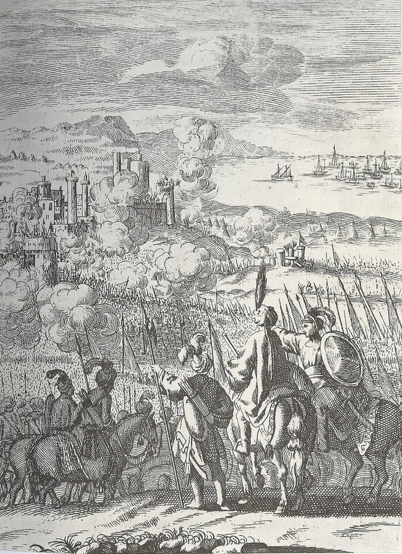
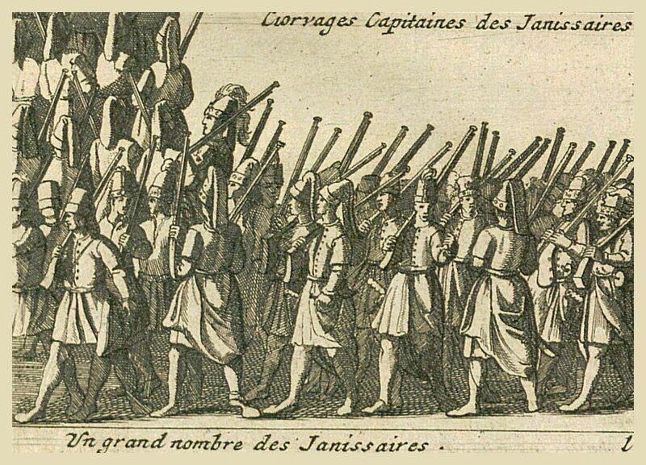

Д о ж
Известья эти столь разноречивы,
Что доверять им трудно.
1-й С е н а т о р
Да, несходны.
В моем письме стоит: сто семь галер.
Д о ж
В моем - сто сорок.
2-й С е н а т о р
А в моем - их двести.
Шекспир, Отелло, Акт 1, сц. 3 (перевод М. Лозинского)
После слегка затянувшегося рассказа о флоте и кораблях османов вернемся к осаде Родоса в 1522 году. Мы остановились на оценке сил госпитальеров, сосредоточенных в крепости. Поговорим теперь, какими силами располагал султан.

Приняв решение о начале кампании против иоаннитов на Родосе, султан взял на себя общее руководство, а также командование основным ядром сухопутных войск, выделенных для штурма крепости. Командование морскими силами, выделенными для обеспечения операции, он поручил второму визирю, своему зятю, капудану Галлиполи Мустафа-Паше (Palaķ Muṣṭafà Paşa). Штурманское обеспечение похода всех военно-морских сил османов было возложено на нашего старого знакомого адмирала и корсара Курдоглу (Ķurdoğlu Müşliḥü-d-dîn Rc'îs), который знал воды восточного Средиземноморья как свои пять пальцев. Специальным указом Сулеймана были амнистированы все турецкие пираты, которым было предложено присоединиться к армаде.
Основные силы флота начали концентрироваться на рейде Стамбула 5 июня 1522 года. По донесению венецианского посла в Стамбуле, которое приводит Сануто в своих «Diarii», флот вышел в море 18 июня 1522 года. В его состав входили 70 легких галер, 40 тяжелых галер и 50 транспортных судов. В боевом охранении были фусты, бригантены и другие малые суда. Общая численность кораблей достигала 300 единиц. Эти данные Сануто подтверждает в своей работе De bello Rhodio (1524) и Fontanus.
Имеются некоторые отличия в оценке сил турецкого флота и сроков его отбытия из Стамбула у ряда других историков. Упоминавшийся уже нами бастард Жак де Бурбон пишет, что турецкий флот состоял из двух соединений. Первое – соединение обеспечения, которое вышло из Стамбула 21 мая 1522 года, включало 25-30 кораблей и судов и достигло вод, контролируемых госпитальерами, 17 июня. Второе – основное соединение, состояло из 103 галер, 35 галеасов, 15 мавн (о них мы писали ранее) и более мелких судов , общей численностью до 250 вымпелов. Вместе с кораблями обеспечения и присоединившимися позже кораблями из Сирии османский флот вторжения насчитывал до 400 единиц.
В конце июня эскадра обеспечения прибыла в воды, контролируемые флотом госпитальеров. Началась выгрузка снаряжения на остров. Сохранилась инвентарная опись этого снаряжения. Одно только перечисление названий доставленных на Родос средств поражает широтой охвата и тщательностью разработки плана штурма Родоса. На остров были в громадном количестве выгружены запасные доспехи воинов, кольчуги, каски, латные рукавицы, щиты, пики и дротики, пушки, фузеи (легкие мушкеты), луки и арбалеты, сотни тысяч выстрелов к доставленному оружию (ядра, пули, стрелы для луков и арбалетов, бомбы, пороховницы, фитили и бумага для пыжей, зажигательные приспособления), сера, селитра, уголь (материалы, необходимые для изготовления пороха), зажигательные вещества, изготовленные из нефти… По пути следования на Хиосе были загружены железо, олово, медь для возможной отливки пушек прямо на месте. Доставлены были инструменты для работы плотников, камнерезов, каменщиков, землекопов (одних только ивовых корзин было выгружено 3700 штук). Казалось, предусмотрены были все возможные варианты развития событий вокруг осажденной крепости. Обращает на себя внимание наличие среди предметов снабжения тысячи фузей, предназначенных специально для размещения на легких судах, по пять-десять фузей на судно, что указывает на подготовку возможного сражения с рыцарями на море. Помимо военного снаряжения среди доставленного имущества имелось множество предметов обмундирования и обуви (даже расшитые халаты для премирования отличившихся воинов), и средств для их ремонта, вплоть до сапожной дратвы и портновских ниток. (Подробно с ссылками на источники этих данных можно ознакомиться в книге: Vatin, Nicolas L'Ordre de Saint-Jean-de Jérusalem, l'Empire ottoman et la Méditerranée orientale entre les deux sièges de Rhodes, 1480-1522. Peeters Publishers, 1994)
Следует принять во внимание, что все это снаряжение было дополнением к вооружению армии, которая двигалась к острову. Каждый воин этой армии был полностью вооружен и экипирован.

Тем временем сам султан шестнадцатого июня 1522 года переправился через Босфор и в Ускюдаре принял командование армией. Начался переход вдоль анатолийского берега Средиземного моря, в ходе которого в армию султана вливались новые соединения янычар, прибывающие из внутренних районов империи. Мы уже упоминали, что все события скрупулезно фиксировались в журнале султана, сохранившемся до наших дней.
Большинство авторов того времени сообщает, что армия, которую вел султан, насчитывала 100 тысяч человек. Об этом, в частности, пишет Сануто (Sanudo, Diarii, XXXIII. 359-64). Однако другие современные историки оценивают общую численность сухопутной армии в 200 тысяч человек, из которых 60 тысяч – «саперы», а проще, землекопы, набранные в Валахии и Боснии. (Сводку всех данных по численности сухопутных войск Сулеймана можно посмотреть в книге Kenneth M. Setton, The. Papacy and the Levant. (1204-1571). Vol. IV: The Sixteenth Century from Julius III to Pius V, p. 205). Сэр Николас Робертс, который находился на Родосе во время осады, писал графу Суррею, что турки имели 15 тысяч моряков на борту кораблей эскадры, 100 тысяч воинов в сухопутной армии и 50 тысяч мобилизованных землекопов, которые, правда, помимо лопат были вооружены и пиками. (В то же время очевидец осады писал, что к концу сражения (декабрь 1522 года) число кораблей сократилось до 50 единиц, огромные потери были и у армии.)
Кое-где на маршруте османской армии, двигавшейся по побережью Анатолии, возникали задержки, однако Сулейман в таких случаях демонстрировал выдержку. В своем дневнике он написал, что армия в отдельные дни делала по два перехода. Через день после того, как передовые отряды достигли бухты напротив острова, началась высадка основных сил, что само по себе является достижением. Однако часть армии, находившаяся под непосредственным командованием Сулеймана, не высаживалась на остров до 28 июля. Другие командующие высадили свои войска под прикрытием орудий с галер ранее.. На остров, помимо запасов продовольствия, была доставлена тяжелая артиллерия и десять тысяч солдат.
Продолжим в следующий раз.